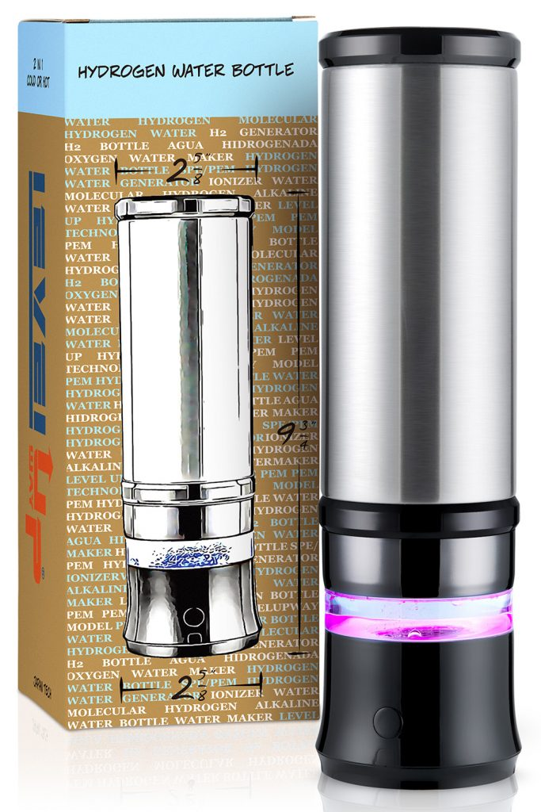

Marke: Level Up WayHydrogen Bottle
2-in-1 Hydrogen Water Bottle
Portable SPE/PEM-Hydrogenflasche mit Selbstreinigungsmodus.
Preis auf Anfrage
Veröffentlichte Daten
| H₂-Angabe | bis 1.300 ppb laut Produkttitel |
| Volumen | 11 oz / ca. 325 ml |
| Technologie | SPE/PEM |
| Pflege | Selbstreinigungsmodus |
| Datenstatus | Die offizielle Seite war bei der Recherche zugriffsgeschützt; nicht sichtbare Werte wurden nicht geschätzt. |